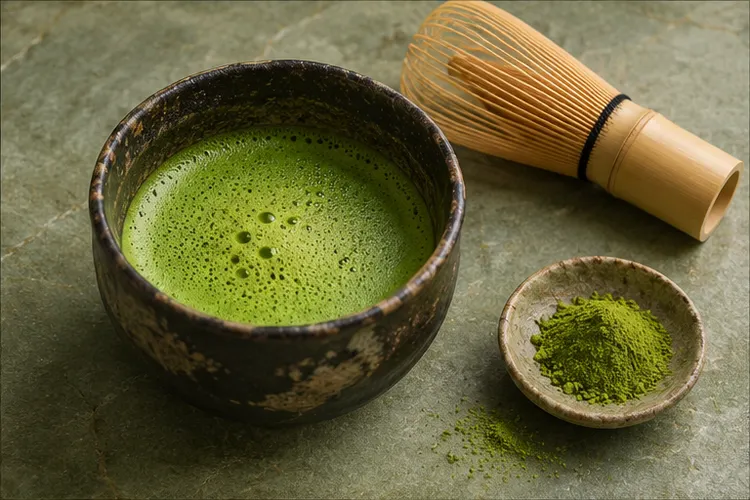

抹茶
醇厚鮮味 · 點茶、拿鐵
查看茶品宇治 月野茶房
台灣・本期開團
網站示範 · 非正式開團
抹茶、煎茶、焙茶。跟著台灣團主，一起把月野茶房的三款日本茶帶回家。
本期團主 台北小林（示範團主）
本期團主
第一次喝，可以先從煎茶開始。抹茶做成拿鐵，焙茶留到飯後慢慢喝，一盒就能比較三種茶香。
將抹茶過篩，加少量溫水，用茶筅快速攪打。做拿鐵時，點好後再倒入牛奶或植物奶。
把茶葉放入茶壺，倒入熱水沖泡，再將茶湯倒盡。用較溫的水可以讓滋味更柔和。
用茶壺以熱水短時間沖泡。想保留清爽尾韻，可以先少浸泡一會兒，再依口味調整。
成團後通知付款。若未成團，無須付款。
商品頁示範 · 設計預覽
示意方案，尚未開放訂閱
將抹茶過篩，加少量溫水，用茶筅快速攪打。做拿鐵時，點好後再倒入牛奶或植物奶。
宇治 月野茶房
Taiwan · current group buy
Demo · Sample campaign
Matcha, sencha, and hojicha. Bring three Japanese teas to Taiwan with a local group organizer.
Your group organizer Lin in Taipei (demo organizer)
Your group organizer
Start with the sencha, whisk the matcha into a latte, and save the hojicha for after dinner. There are three ways to enjoy the same box.
Mellow umami · Whisked or in a latte
View tea detailsFresh and lightly sweet · Everyday brewing
View tea details
Toasty and light · After a meal
View tea detailsSift the matcha, add a little warm water, and whisk briskly with a chasen. For a latte, add milk or plant milk after whisking.
Steep the leaves in a teapot and pour out all the tea. Use slightly cooler water for a softer taste.
Steep briefly in a teapot with hot water. Start with a short steep for a clean finish, then adjust to taste.
We send payment instructions if the group buy goes ahead. No payment is due if it falls short.
Product page preview · Design preview
Sample plans. Subscriptions are not open.
Sift the matcha, add a little warm water, and whisk briskly with a chasen. For a latte, add milk or plant milk after whisking.
宇治 月野茶房
台湾・今期の團購
デモ · 実際の募集ではありません
抹茶、煎茶、ほうじ茶。台湾の團主と一緒に取り寄せる、月野茶房の飲み比べセット。
今回の團主 台北の林さん（デモ團主）
今回の團主
まずは煎茶をゆっくり味わってみてください。抹茶はラテに、ほうじ茶は食後に。三つの香りを一箱で楽しめます。
抹茶をふるい、少量の湯を注いで茶筅で手早く点てます。ラテなら、点てた後にミルクを加えます。
急須に茶葉と湯を入れて蒸らし、最後まで注ぎ切ります。柔らかな味にしたいときは、少し冷ました湯を使います。
急須で熱めの湯を使い、短めに抽出します。すっきりした後味を目安に、時間を調整します。
成團後に支払いのご案内を受け取ります。不成立の場合、支払いはありません。
商品ページのプレビュー · デザイン案
定期便の表示例です。現在は受付前です。
抹茶をふるい、少量の湯を注いで茶筅で手早く点てます。ラテなら、点てた後にミルクを加えます。